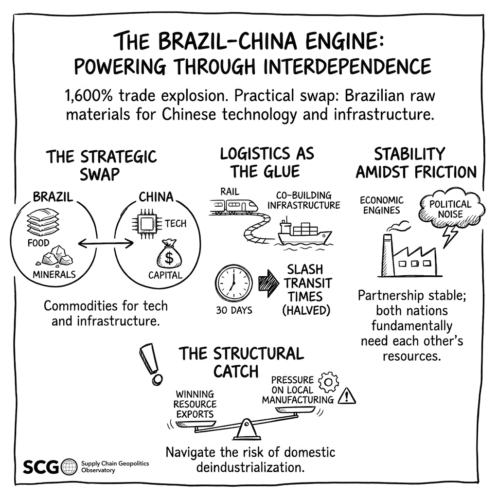

Local 12 News · May 2025
Ideas in Circulation
Where our work travels.
Research moves through journals, books, public commentary, media, and conversations with the people making decisions.
In the Public Conversation
Local 12 News · April 2025
U.S.–China tariffs and healthcare costs
In Academic Journals
Evaluating the Brazil-China trade relationship: Navigating economic disparities, divergent objectives, and strategic influence.
Latin American Policy, 17(2), e70056.
View publication ↗View snapshot

Listen to the audio snapshot
Transition paths of Brazil from an agricultural economy to a regional powerhouse: A global supply chain perspective.
Sustainability, 16(7), 2872.
View publication ↗Populism pressure, public policies, and firm strategic choices: The case of Brazil.
Thunderbird International Business Review, 66(3), 251–268.
View publication ↗Socially responsible supply chain initiatives and their outcomes: A taxonomy of manufacturing companies.
Supply Chain Management: An International Journal, 28(1), 90–106.
View publication ↗Supply chain and operations strategies for problem-solving in Latin American countries: An introduction.
Journal of Operations and Supply Chain Management, 10(2), 1–5.
View publication ↗Responsiveness in the supply chain: A possible decision-driver for location of new subsidiaries?
Journal of Operations and Supply Chain Management, 6, 26–41.
View publication ↗Estratégia de operações internacionais: Evolução e tendências.
Revista de Administração da UNIMEP, 10, 1–27.
View publication ↗In Books
Global supply chains and the rise of strategic buffer economies.
In T. Hoang (Ed.), Geopolitics, War, and the Strategic Repositioning of Supply Chains. IGI Global. Forthcoming.
Populism expectations and supplier diversity.
In Encyclopedia of New Populism and Responses in the 21st Century. Springer.
View DOI ›The role of strategic sourcing on global supply chain competitiveness.
In Managing Operations Throughout Global Supply Chains. IGI Global.
In Practice
U.S. Foreign-Trade Zones: Operational strategies adopted by FTZ managers.
Research report, Northern Kentucky University.
Os efeitos em cascata da COVID-19 nas cadeias produtivas.
O Estado de S. Paulo.
Media archive
Earlier appearance
Selected coverageU.S. tariffs and regional business impact.
TV interview, Cincinnati, Ohio · May 2025
Watch interview
U.S.–China tariffs and healthcare cost implications.
TV interview, Cincinnati, Ohio · April 2025
Watch interview
Coronavirus pandemic and protein supply shortages.
TV interview, Cincinnati, Ohio